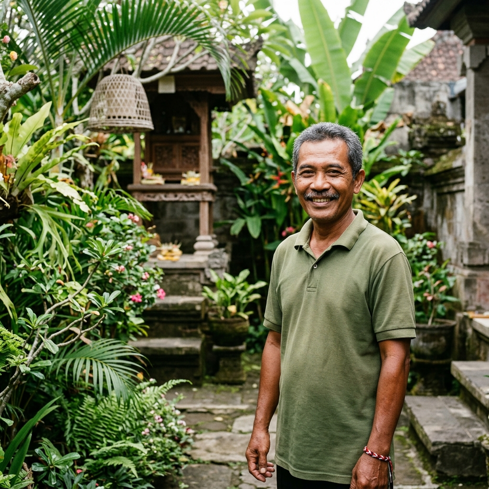
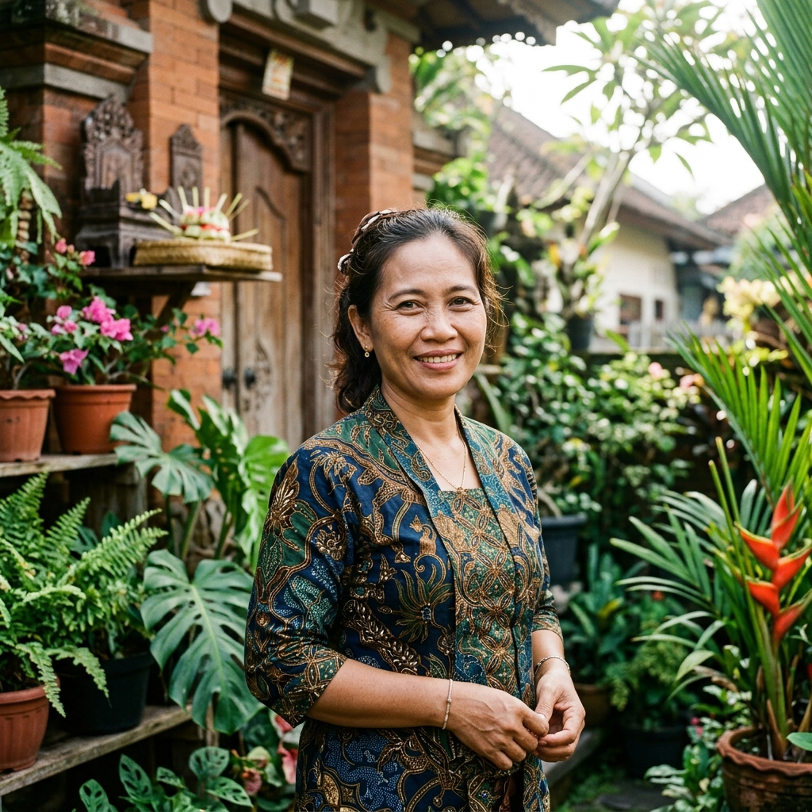

Pagi tadi selesai menanam 1 bibit Pohon Tanjung di sudut barat pekarangan rumah. Teras depan yang dulunya kena radiasi pantulan semen 38°C sekarang mulai teduh. Jarak ke pagar 2.2 meter, aman dari saluran got. #AksiTanam
On Trending

Untuk gang sempit selebar 3 meter di Sesetan, Ketapang Kencana benar-benar penyelamat. Tajuk bertingkatnya menyaring sinar matahari sore tanpa bikin sempit jalan masuk motor warga. #PekaranganSemen

3 jam lalu
Setuju Bu Desak! Daunnya juga mudah disapu tiap pagi, tidak bikin becek got.
Banyak tetangga ragu menanam pohon karena takut tembok pagar retak. Ingat kuncinya: pilih pohon dengan tipe akar tunggang (seperti Tanjung atau Tabebuia), bukan akar serabut liar seperti Beringin. Tambahkan pipa biopori vertikal agar air mengalir ke bawah. #AmanFondasi
12 jam lalu
Terima kasih infonya Dokter, sangat berguna untuk warga yang pekarangannya full semen.
Tanyakan Teduh Bot! 😉
Teduh Bot
Halo! Saya Teduh Bot. Tanyakan apa saja seputar alasan ilmiah pohon menurunkan suhu lingkungan, rekomendasi pohon ramah fondasi, atau ketik pertanyaan Anda di bawah.

Bagus sekali Bli Surya. Ditanam dari bibit ukuran berapa meter kemarin? Akarnya langsung tunggang ke bawah ya?
Pakai bibit 1.5 meter Bu. Langsung disiram air cucian beras dan tanah humus subak, cepat kokoh akarnya.